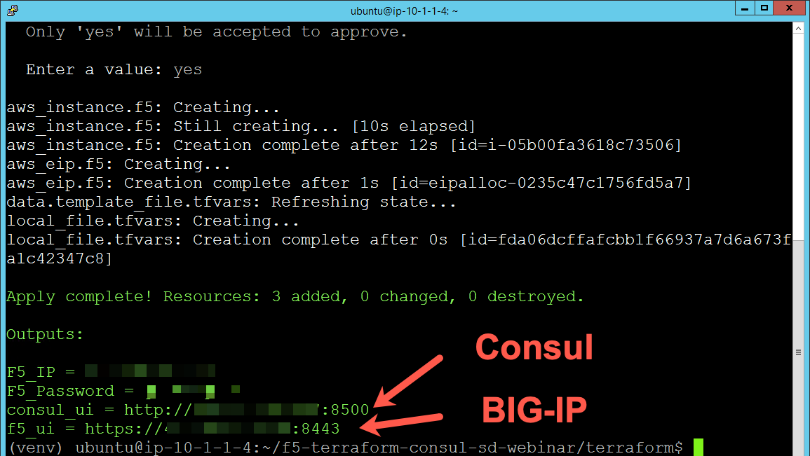
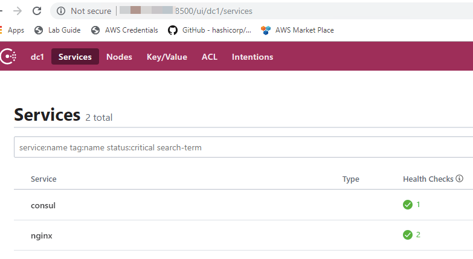
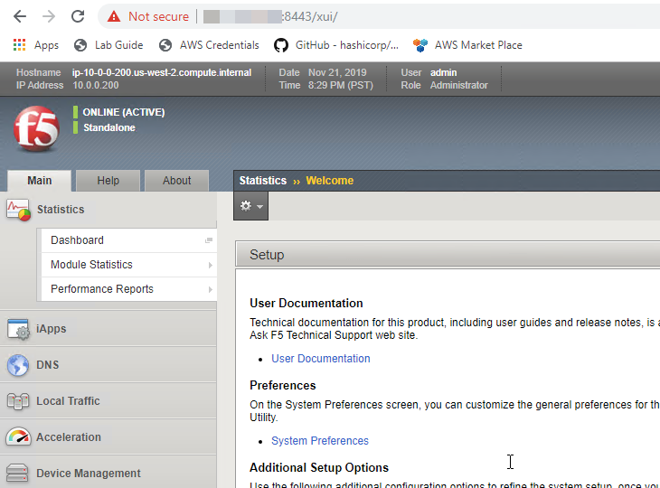
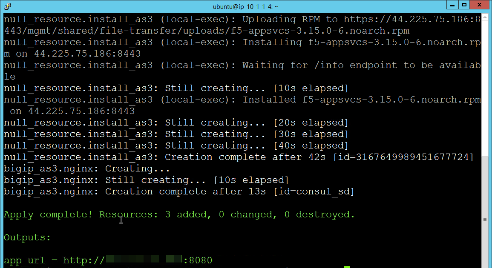
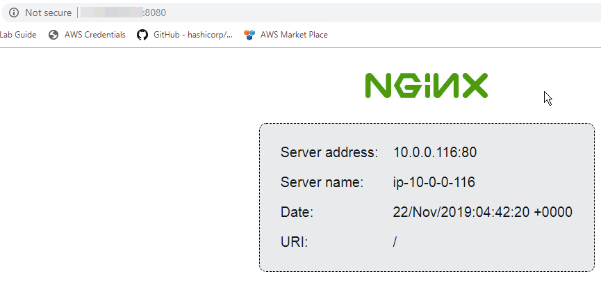

F5 Solutions for Containers > Class 7: Dude Where's My Services: Introduction to Service Discovery with Consul Source |
Terraform: Step #2¶
After you complete Step #1 you should see URLs for Consul and BIG-IP.
Warning
It may take several minutes for the BIG-IP to become available.
Visit these URLS.
Consul¶
BIG-IP¶
Install AS3¶
On the Ubuntu host run the following commands
$ cd ~/f5-terraform-consul-sd-webinar/as3/
$ terraform init
$ terraform plan
$ terraform apply
In this scenario we are executing a shell script that will install AS3 and deploy the "nginx.json" declaration that is configure to use Consul's API for service discovery.
You should see the following output.
Follow the URL and you should see NGINX.
At this point you should observe that on the BIG-IP there is partition named "Consul_SD". Select the partition (top right of screen).
This partition was created by the "nginx.json" that contains the following.
{
"class": "ADC",
"schemaVersion": "3.7.0",
"id": "Consul_SD",
"Consul_SD": {
"class": "Tenant",
"Nginx": {
"class": "Application",
"template": "http",
"serviceMain": {
"class": "Service_HTTP",
"virtualPort": 8080,
"virtualAddresses": [
"10.0.0.200"
],
"pool": "web_pool",
"persistenceMethods": [],
"profileMultiplex": {
"bigip": "/Common/oneconnect"
}
},
"web_pool": {
"class": "Pool",
"monitors": [
"http"
],
"members": [
{
"servicePort": 80,
"addressDiscovery": "consul",
"updateInterval": 10,
"uri": "http://10.0.0.100:8500/v1/catalog/service/nginx"
}
]
}
}
}
}
Once the partition is select you should observe their is a pool named "web_pool" and there is a single pool member. In the next step we will increase the number of NGINX nodes and you will see the change reflected on the BIG-IP.